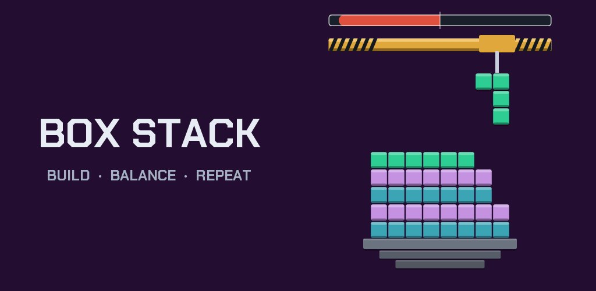

Box Stack
A stacking game about balance, free on Android
A crane hands you boxes and you build a tower on a little boat. Fill a row all the way across and it locks in. Let the tower get lopsided and the whole thing rolls over into the harbour.

How to play
Five things to know
- Pick a boxThree boxes wait on the mat at the bottom. Drag one up and the crane takes it.
- Slide it and let goYou choose where it goes along the tower, and it drops straight down until it lands. No rotating: every box goes down the way it was dealt.
- Fill rowsWhen all eight spaces in a row are full, the row sets. It stays right where it is and becomes the floor for everything above it.
- Keep it balancedEvery loose box pulls the tower toward its side, and the higher it sits, the harder it pulls. The bar at the top shows how close you are to going over.
- Use all three, get three moreBoxes come in sets of three, picked by looking at your tower. Play all three and the next set arrives. There's no timer, so take your time.
Tips
How to build a taller tower
- Finish rows. Anything below a finished row stops counting toward your lean, so closing a row is the best way to steady a wobbly tower.
- Keep overhangs low. A box sticking out near the top pulls much harder than the same box near the bottom.
- Watch the bar before you let go. On a young tower, the bar even shows what dropping a box there would do.
- Chain your rows. Finishing rows back to back builds a combo, and your score climbs a lot faster.
- Red means help is coming. When the bar turns red, the game starts dealing boxes that give you a way out. Look for them.
How tall is your tower?
Stonehenge to the Burj Khalifa
Every box in Box Stack is the height of a shipping container, 2.591 metres. When a run ends, your tower is measured against a real landmark. Here's how many boxes high you need to go to pass a few of them:
| Landmark | Height | Boxes |
|---|---|---|
| StonehengeWiltshire, England | 7.3 m | 3 |
| Great Buddha of KamakuraKamakura, Japan | 13.35 m | 6 |
| El CastilloChichén Itzá, Mexico | 30 m | 12 |
| Sixteen more in between. You'll have to build to find them. | ||
| Burj KhalifaDubai, UAE | 828 m | 320 |
What's in it
Small game, lots to do
-
No timers, no lives, no energyOne tower, for as long as you can keep it standing.
-
Badges, levels and a Brag BookEarn badges, gain experience with every run, and keep your records and landmarks in your Brag Book.
-
A score card to shareEvery run ends with a card showing your tower, ready to send to anyone you want to beat.
-
New colours every runEach tower climbs through its own set of colours, and you can help pick them.
-
Plays offlineNo account and no sign-in. If you get interrupted, it remembers your run.
-
Works with TalkBackAnd there are settings for reduced motion and higher contrast.
Questions
Quick answers
Is Box Stack free?
Yes. It's free on Google Play. There's a banner ad at the bottom of the screen, and when a tall tower goes over you can choose to watch a short ad to rescue it.
Is it on iPhone?
Not right now. Box Stack is on Android, through Google Play. You can still play a short round in any browser.
Does it work offline?
Yes. The game runs entirely on your phone, with no account and no sign-in. It only uses the internet for ads, and for measuring my ad campaigns.
Can I rotate the boxes?
Nope. Every box goes down exactly as it's dealt, and each set of three is checked to make sure there's a way to survive it.
More on the support page, or just email me.
Ready to build?
Box Stack is free on Google Play. I hope you have as much fun with it as I had making it.